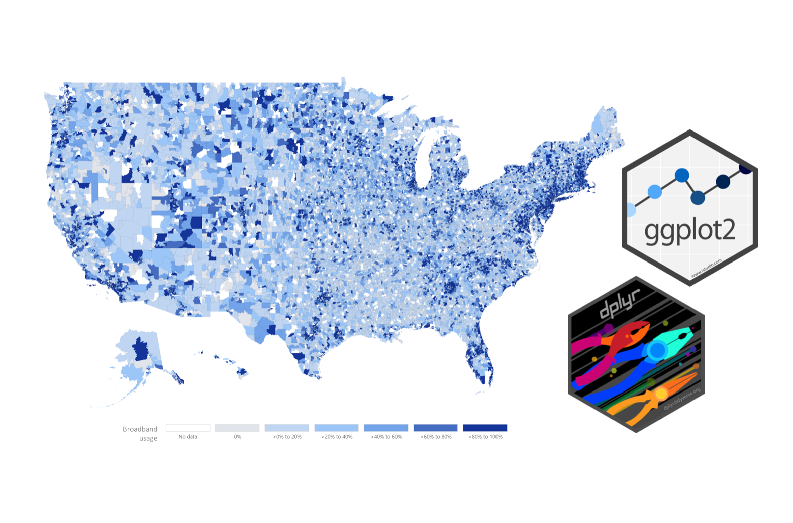

Assignment 01
INTRODUCTION TO STATISTICAL COMPUTING
The goal of this assignment is to give you experience working with the R statistical computing environment. In this assignment, you will use the data from the file broadband.csv to examine broadband access in the United States.
Instructions
Submit a PDF document of your responses to the following questions. Please adhere to the following guidelines for further formatting your assignment:
- All plots should be resized so that they do not take up more room than necessary.
- All figures and tables should have a name (e.g., Figure 1) and an appropriate caption.
This assignment is worth 11 points.
Preparation
If you have not already installed them, you will need to install the {dplyr} and {ggplot2} packages to complete this assignment. Once these have been installed successfully, you should not need to install them again. Remember: Install once; load every session.
Open a new script file. Save the script file as Assignment-01.R. Save all of the R syntax you use to answer the questions on this assignment in this script file.
Denote each question in the script file using comments. For example,
##################################################
### Question 1
##################################################
<< syntax >>Add comments throughout your syntax as liberally as you feel is necessary to help you recall what the syntax does in the future. Although you do not need to submit this in with your assignment, it will be useful for building good coding habits and potentially for future assignments.
Part I: Minnesota Broadband Access
After importing the broadband data into RStudio, create a new data frame object that only includes counties in Minnesota (postal code for Minnesota is MN). Hint: Use filter(). Assign the Minnesota broadband data into a new object called mn. Use the mn data to answer the following questions.
Use the
geom_density()function from the{ggplot2}package to create a density plot of the distribution of themicrosoft_useagevariable for all 87 counties in Minnesota. You can see many examples of how to do this here. Include this plot in a word-processed document. Resize the plot so it does not take up any more space than necessary. Be sure the plot has appropriate labels and has a caption.Use the
geom_density()function from the{ggplot2}package to create a density plot of the distribution of themicrosoft_useagevariable for the counties in Minnesota, but this time usecolor=orfill=to color by whether the county is a metropolitan or non-metropolitan county. (Hint: You should get two density plots.). Include this plot in a word-processed document. Resize the plot so it does not take up any more space than necessary. Be sure the plot has appropriate labels and has a caption.Compute the mean and the standard deviation of the
microsoft_useagevariable for metro and non-metro counties. Report these values.By referring to the values, and the plots, what can you say about broadband access in Minnesota? Is there a broadband access gap?
Part II: State-Level Broadband Access
In this section, you will use the data in broadband.csv to create state-level summaries of the microsoft_useage and the fcc_availability variables. Begin by filtering out Washington DC so it is not included. Then compute means and standard deviations for each state. (Hint: Make sure that every state has mean and standard deviation values for both variables when you are done!) Use this state-level data to answer the following questions.
Based on the Microsoft and FCC estimates, does it seem that the FCC estimates (which are provided by the ISPs) are “overestimating” America’s broadband access? Explain.
Using the Microsoft estimates, which states have the best and worst broadband access based on the means? Which states are the most and least homogenous (across counties) in terms of their broadband access?
Create a table that includes the Microsoft and FCC estimates of broadband access you computed for the states in bordering Minnesota: Minnesota (MN), Iowa (IA), South Dakota (SD), North Dakota (ND), and Wisconsin (WI). Report these values in a word-processed table alphabetically by state. To format this table: Examine the structure and formatting of Table 2 at https://zief0002.github.io/musings/creating-tables-to-present-statistical-results.html. Notice that variables are presented in rows and summary statistics are presented in columns. Mimic the format and structure of this table to create a table to present the numerical summary information asked for in this question. Finally, give your table a name (e.g., Table 1) and an appropriate caption.
Part III: State-Level Broadband Access versus Poverty
In this section, you will use all the data in broadband.csv to create state-level means of the microsoft_useage and the pct_poverty variables. Again, filter out Washington DC so it is not included. (Hint: Make sure that every state has mean values when you are done!) Use this state-level data to answer the following questions.
Use
ggplot()to create a scatterplot of the relationship between the proportion of users with access to broadband and the proportion of people living in poverty using the state-level data. (Put the proportion living in poverty on the x-axis.) Change the axis labels so that both the x- and y-axis have labels that suitably describe the variables being plotted. (For help on this, read the Axes page of the Cookbook for R website.) Include this plot in a word-processed document. Resize the plot so it does not take up any more space than necessary. Finally, give your figure a name (e.g., Figure 1) and an appropriate caption.Based on these data, describe the relationship between poverty and broadband access.
Identify Minnesota on your plot. (You do not have to use R to do this; you can use an image editor, or do it by hand.) You can either create a new plot or just include Minnesota on the plot you include for Question 8.
Based on its location in the plot, how does Minnesota compare to the other states in terms of broadband access? What about in terms of poverty? Explain.
How do I submit the assignment?
Create a PDF of your responses and submit the PDF via email to both the instructor and TA. Also cc any group members. Before you submit the assignment check that:
- All group members’ names are on the assignment.
- All tables are numbered and have a caption.
- All figures are numbered and have a caption.
- All figures are re-sized to not take up more page space than is necessary to read them.
- No R syntax is included unless the question specifically asked for the syntax to be included. If there is R syntax included, be sure that it is typeset in a monospaced font (e.g., Courier, Inconsolata).
- Do not submit the script file you used unless the directions specifically ask you to submit it.